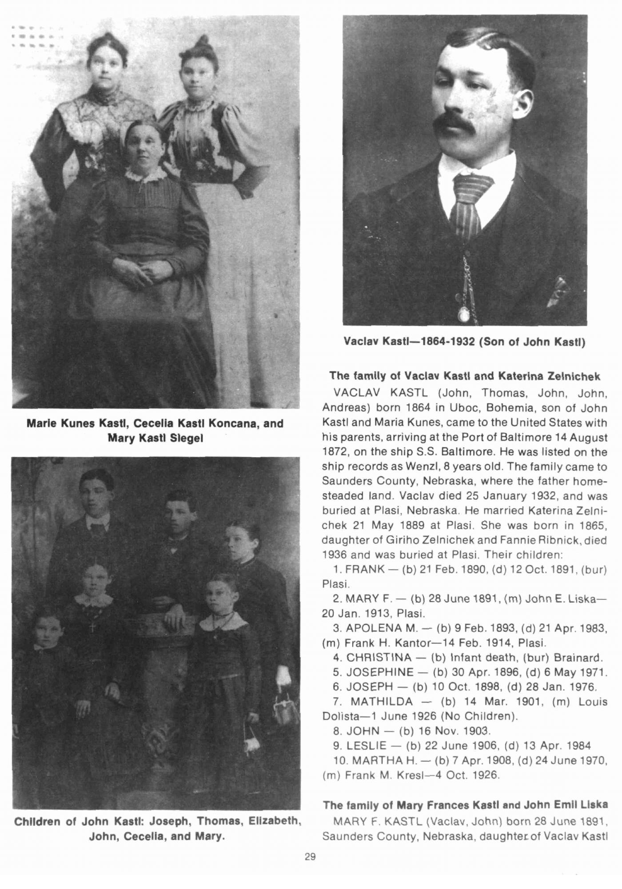

The book · The Family of John Kastl
Page 29 The family of Vaclav Kastl and Katerina Zelnichek


Transcription


The family of Vaclav Kastl and Katerina Zelnichek
VACLAV KASTL (John, Thomas, John, John, Andreas) born 1864 in Uboc, Bohemia, son of John Kastl and Maria Kunes, came to the United States with his parents, arriving at the Port of Baltimore 14 August 1872, on the ship S.S. Baltimore. He was listed on the ship records as Wenzl, 8 years old. The family came to Saunders County, Nebraska, where the father homesteaded land. Vaclav died 25 January 1932, and was buried at Plasi, Nebraska. He married Katerina Zelnichek 21 May 1889 at Plasi. She was born in 1865, daughter of Giriho Zelnichek and Fannie Ribnick, died 1936 and was buried at Plasi. Their children:
- FRANK — (b) 21 Feb. 1890, (d) 12 Oct. 1891, (bur) Plasi.
- MARY F. — (b) 28 June 1891, (m) John E. Liska—20 Jan. 1913, Plasi.
- APOLENA M. — (b) 9 Feb. 1893, (d) 21 Apr. 1983, (m) Frank H. Kantor—14 Feb. 1914, Plasi.
- CHRISTINA — (b) Infant death, (bur) Brainard.
- JOSEPHINE — (b) 30 Apr. 1896, (d) 6 May 1971.
- JOSEPH — (b) 10 Oct. 1898, (d) 28 Jan. 1976.
- MATHILDA — (b) 14 Mar. 1901, (m) Louis Dolista—1 June 1926 (No Children).
- JOHN — (b) 16 Nov. 1903.
- LESLIE — (b) 22 June 1906, (d) 13 Apr. 1984
- MARTHA H. — (b) 7 Apr. 1908, (d) 24 June 1970, (m) Frank M. Kresl—4 Oct. 1926.
The family of Mary Frances Kastl and John Emil Liska
MARY F. KASTL (Vaclav, John) born 28 June 1891, Saunders County, Nebraska, daughter of Vaclav Kastl
Transcriber’s notes
Left column holds only two photos; right column holds the Vaclav Kastl portrait and text. In the bold caption font the i-dots are faint (Marie/Cecelia look like 'Marle'/'Cecella'); 'Slegel' kept as on p. 28 body text where the regular font clearly prints Slegel. Last sentence runs on to next page.